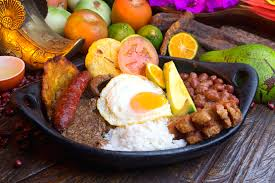
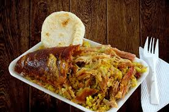
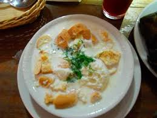
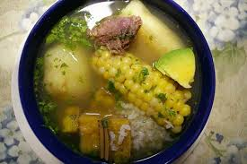
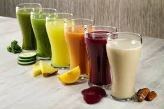

Mis favoritos:





La comida del eje cafetero
Noviembre 5 de 2019
en el eje cafetero, regiones como el Quindío, Pereira, Risaralda y Antioquia
el plato predominante es la bandeja paisa, esta delicia de más de 2000 calorías
está compuesta generalmente por arroz, fríjoles, chicharron, chorizo, aguacate,
platano y hasta un huevito frito. Definitivamente hay que estar bien del
estómago para que no nos vaya a caer pesado suculento plato, pero no esta de más
darnos este antojito de vez en cuando, y es que a pesar de ser un plato muy
antioqueño, en cualquier parte del país se puede conseguir; en muchos restaurantes
inclusive eligen un día entre semana para promocionar la deliciosa frijolada la cual
es una ligera modificación de la bandeja paisa, separan los fríjoles en un plato
sopero y el arroz con los acompañantes en un plato pando; estos días son los más
movidos en los restaurantes que implementan esta estrategia.


Ajiaco Santafereño
El ajiaco Santafereño es uno de los plato más degustados en todo el
país, especialmente en los santanderes, Boyacá y Cundinamarca. El plato
es una sopa que contiene en sus ingredientes principales: la papa (sabanera
y criolla),pollo, mazorca, guascas, y se acompaña con una porción de
arroz y aguacate. Realmente es una opción para los que quieren saborear
lo mejor de nuestro campo colombiano